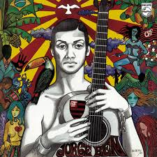

Edizione nº 0
Del 2025/26.
Ciao! Siamo la rivista Ganzine.pdf. Rivista fatta dagli alluni e per gli alunni del Liceo Piero della Francesca, qui gli studenti hanno piena libertà di esprimersi e condividere conoscenze...
Ultima EdizioneOgni edizione è molto diversa, ecco le più recenti.
Del 2025/26.
~Dicembre 2026.
~Aprile 2027
Intervista con l'ex-professore del Liceo Piero della Francesca, Agostino Fabbri.
Intervista con tutti candidati a rappresentanti d'Istituto.
Ecco tutte le info sul Campionato Nazionale & Olimpiadi di Storia dell'Arte

Un classico del samba brasiliano. Jorge Ben Jor ci presenta lo spirito di vivere in un paese tropicale.
Chi siamo.
Vuoi vedere un tuo articolo, arte o foto nella prossima edizione? Inviaci una mail tramite il tasto sotto.
Inviare mia idea